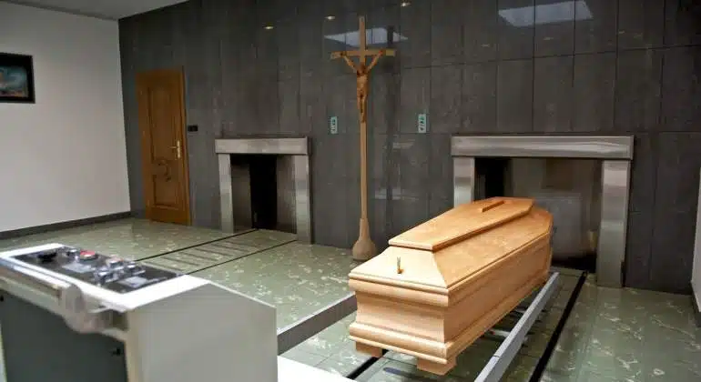
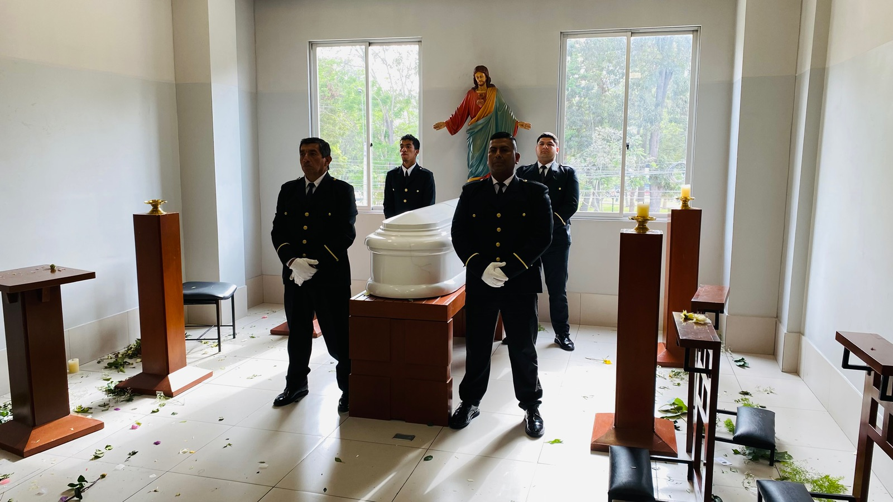
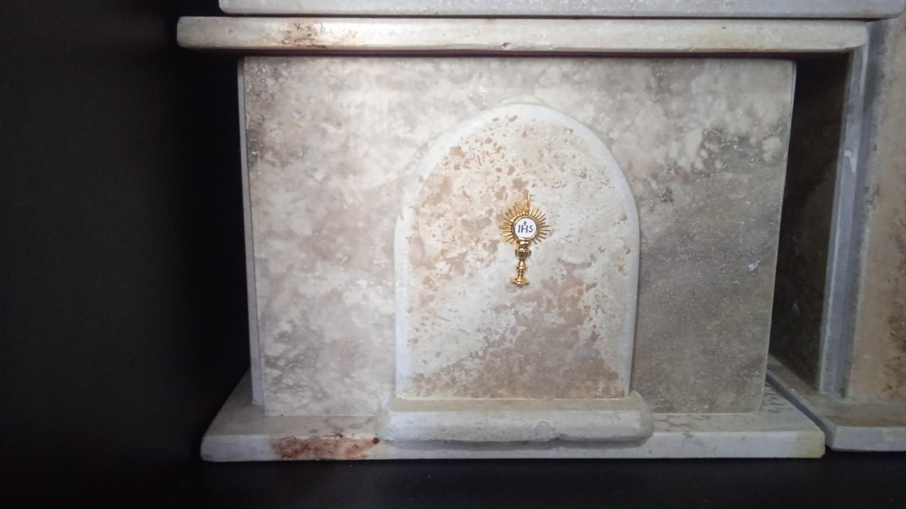

Gestionamos el proceso de cremación con responsabilidad y respeto, orientando a cada familia durante todas las etapas del procedimiento.

Ofrecemos la gestión integral del proceso de cremación, orientando a la familia en cada decisión y coordinando directamente con el crematorio correspondiente. Nuestro equipo acompaña cada etapa del procedimiento, buscando que todo se desarrolle de manera adecuada, con respeto y consideración hacia los familiares.
Llamar ahoraGestionamos directamente con la entidad correspondiente para que el proceso se realice sin contratiempos.
Nos encargamos de los permisos y la documentación necesaria durante todo el procedimiento.
Acompañamos a la familia en cada decisión, con información clara y sin presiones.
Coordinamos la entrega en la urna que la familia elija, respetando sus tiempos y decisión.
En muchos casos, la cremación se vincula a un proceso de exhumación previo. Gestionamos ambos procedimientos de manera coordinada, acompañando a la familia de principio a fin.
Ver servicio de Exhumaciones →
